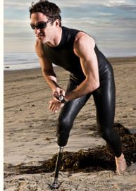

Prosthetic Services: Lower Extremity
Prosthetic Feet
.jpg) A prosthetic foot is made of metal, plastic or a combination of the two. There are a lot of reasons from birth defects to accidents which cause a loss of a person's foot. There are various kinds of prosthetic feet available for amputees based upon the patient's circumstances.
A prosthetic foot is made of metal, plastic or a combination of the two. There are a lot of reasons from birth defects to accidents which cause a loss of a person's foot. There are various kinds of prosthetic feet available for amputees based upon the patient's circumstances.
A prosthetic foot can be attached to a person's ankle or calf to compensate for missing foot. In certain cases where a part of a person's foot is missing, a partial foot may attach to the remaining part of a person's foot to compensate for missing parts.
There are five basic functions of the prosthetic foot:
• Replace lost muscle function,
• Provide a stable, weight-bearing surface
• Absorb shock during movement
• Replicate anatomic joint
• Restore cosmetic appearance of the limb
There are two broad categories of prosthetic feet: energy-returning feet or non-energy-returning feet.
SACH
Non energy returning feet include solid-ankle, cushioned-heel (SACH) foot and the single-axis foot. The SACH foot mimics ankle plantar flexion which allows for a smooth gait. This prosthetic is a low-cost and low-maintenance foot for a sedentary patient who has had a BKA or an AKA. The single-axis foot adds passive plantar flexion and dorsiflexion, which increase stability during the stance phase. These are commonly used for patients with transfemoral amputation if knee stability is desired.
Energy-Returning Feet
 Energy-returning feet assist the body's natural biomechanics and allows for greater cadence or less oxygen consumption. The multiaxis foot and the dynamic-response foot are members of this family. The multiaxis foot adds inversion, eversion, and rotation to plantar flexion and dorsiflexion; it handles uneven terrain well and is a good choice for individuals with minimal-to-moderate activity level. The dynamic-response foot is commonly used by young, active persons and by athletic individuals. The forefoot acts like a spring, compressing in the stance phase and rebounding at toe-off.
Energy-returning feet assist the body's natural biomechanics and allows for greater cadence or less oxygen consumption. The multiaxis foot and the dynamic-response foot are members of this family. The multiaxis foot adds inversion, eversion, and rotation to plantar flexion and dorsiflexion; it handles uneven terrain well and is a good choice for individuals with minimal-to-moderate activity level. The dynamic-response foot is commonly used by young, active persons and by athletic individuals. The forefoot acts like a spring, compressing in the stance phase and rebounding at toe-off.
Prosthetic Knees
Since 1999, when the Ottobock C-Leg® made its debut, microprocessor knees (MPK) from various manufacturers have made a difference in the lives of transfemoral amputees. Benefits include increased stability and confidence, reduced cognitive burden, improved quality of life, and expanded activity levels from work to play to extreme sports.
Above knee amputee always watch how they step to make sure they do not fall. MPKs allow amputees to walk and not have to concentrate on every step. The computer processor in the knee will lock the knee at the appropriate time to prevent the fall.
The technology has transferred over to the orthotic field. We can now allow knee level flexion and extension but still lock the knee to prevent falling at the appropriate time in the gait cycle.
In previous designs, we had to manually lock a long leg brace and have the patient walk stiff legged. With the newer designs, the brace will lock automatically at the appropriate time to prevent the affected limb from buckling under weight bearing. This allows a more natural gait and less energy expenditure.
Transtibial Prostheses
A transtibial amputation is above the foot but below the knee. These amputees have a very good chance of regaining normal mobility using a prosthesis.
There are two different types of transtibial prostheses: Patellar Tendon Bearing (PTB) prostheses, and Patellar Supracondylar (PTS).
The most common socket used in PTB design where all weight of the amputee is carried through the stump. The PTB socket contains soft liner and provides cushioning, although a hard socket is considered to be cooler.
Patellar Supracondylar (PTS) was developed in 1964 and is a modification of the commonly used PTB prosthesis. It encloses the patella in front and the femoral condyles medially and laterally.
The advantages of PTS as compared to PTB are:
• The need for suspension strap is eliminated
• Pistoning is reduced because of the closely fitted high enclosure about the condyles and patella
• Increased stability at the knee
• Pressure over the weight-bearing areas of the stump is decreased
• Shorter stumps can be fitted because of the high walls and increased contact areas
• Better cosmetic appearance
Transfemoral Prostheses
Transfemoral prosthesis is designed for use by patients with an amputation above the knee. Due to the complex design of the knee joint.
The C-LEG is the world's first hydraulic stance and swing phase control knee-shin system that is completely micro-processor controlled. The unique relationship between the microprocessor and the hydraulic controls enables the C-LEG to offer amputees the closest possible approximation to a natural gait.
The microprocessor control of the knee joint is based on scientific gait analysis and biomechanical studies. The electronic system monitors how the amputee is walking and creates a smooth, harmonious movement of the prosthetic limb, similar to that of the sound leg. It immediately adapts to different walking speeds and provides knee stability the moment it is needed. Electronic sensors in the C-LEG collect real-time data, which is then sent to the hydraulic damper to control both stance and swing phase.
Swimming Prosthesis
A swimming prosthesis is used for an amputee who has a below-knee amputation. It can also be used with a knee prosthesis to provide swim mobility to an above-knee amputee.
A swimming prosthesis allows a patient to walk easily in and out of water without the concern to damage the prosthesis. This type of prosthesis is waterproof or water-resistant. It keeps the residual limb relatively dry and well suspended.
The swimming prosthesis can be a lifestyle enhancement for an amputee. It gives a patient the ability to use shower, tub, pool, beach, and so on easily.
Partial Foot Prosthesis
Partial amputations of the foot include toe amputation, mid-foot amputation, Lisfranc amputation, and Chopart amputation. Designed specifically for Chopart and TMA patients, the Partial Foot Prosthesis restores normal foot bio-mechanics and properly transfers energy from a rigid lever arm to a two-stage progressive resistance carbon footplate.
Prosthetic options include rigid footplate with arch support combined with a rocker bottom shoe sole, custom molded shoes, and modified ankle-foot prosthesis with toe filler.
Hip Disarticulation Prosthesis
Ottobock Helix Hip: The Helix 3D prosthetic hip provides a more natural walk. With its three-dimensional pelvic rotation, the Helix mimics the natural movement of the human body, unlike other prosthetic “hinged” hips. The unique Helix design also helps users start their steps more smoothly, improves toe clearance and makes it easier to extend the leg during walking. Users will spend much less energy thinking about their next step, walk more naturally and confidently, and experience less pain in the back and joints.